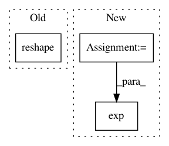

ccbe291ec9859698a57147b1033d503a7739dfa9,tensorforce/core/distributions/gaussian.py,Gaussian,create_tf_operations,#Gaussian#Any#Any#,48
Before Change
self.mean = layers["linear"](x=x, size=flat_size, bias=self.mean)
self.mean = tf.reshape(tensor=self.mean, shape=((-1,) + self.shape))
self.log_stddev = layers["linear"](x=x, size=flat_size, bias=self.log_stddev)
self.log_stddev = tf.reshape(tensor=self.log_stddev, shape=((-1,) + self.shape))
self.log_stddev = tf.minimum(x=self.log_stddev, y=10.0) // prevent infinity when exp
self.distribution = (self.mean, self.log_stddev)
self.deterministic = deterministic
After Change
self.log_stddev = tf.reshape(tensor=self.log_stddev, shape=shape)
// clip log stddev for numerical stability
log_eps = log(util.epsilon)
self.log_stddev = tf.clip_by_value(t=self.log_stddev, clip_value_min=log_eps, clip_value_max=-log_eps)
// standard deviation
self.stddev = tf.exp(x=self.log_stddev)
// general distribution values
self.distribution = (self.mean, self.log_stddev)
self.deterministic = deterministic
In pattern: SUPERPATTERN
Frequency: 3
Non-data size: 3
Instances
Project Name: reinforceio/tensorforce
Commit Name: ccbe291ec9859698a57147b1033d503a7739dfa9
Time: 2017-08-03
Author: aok25@cl.cam.ac.uk
File Name: tensorforce/core/distributions/gaussian.py
Class Name: Gaussian
Method Name: create_tf_operations
Project Name: GPflow/GPflow
Commit Name: 122f4ae6f400f0c43f3fc6a85481264809e678f5
Time: 2016-05-27
Author: james.hensman@gmail.com
File Name: GPflow/kernels.py
Class Name: PeriodicKernel
Method Name: K
Project Name: nipy/dipy
Commit Name: fa786e5f2a8016725991cf2d02eebe6368dc04b3
Time: 2015-10-15
Author: dimrozakis@gmail.com
File Name: dipy/reconst/dti.py
Class Name:
Method Name: wls_fit_tensor